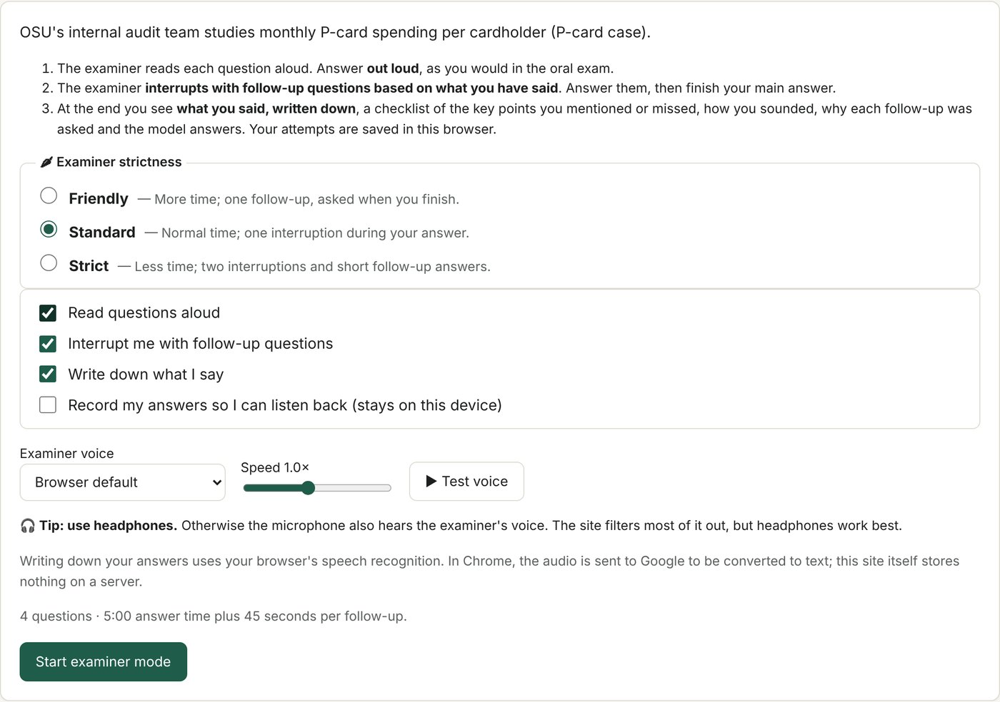
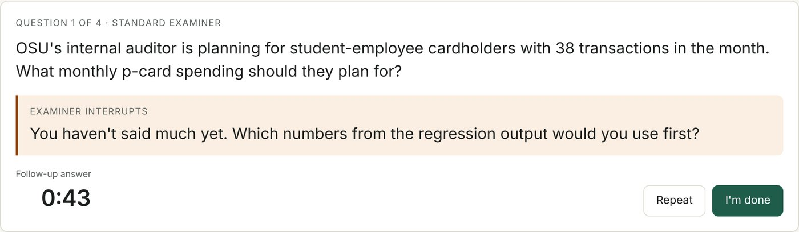
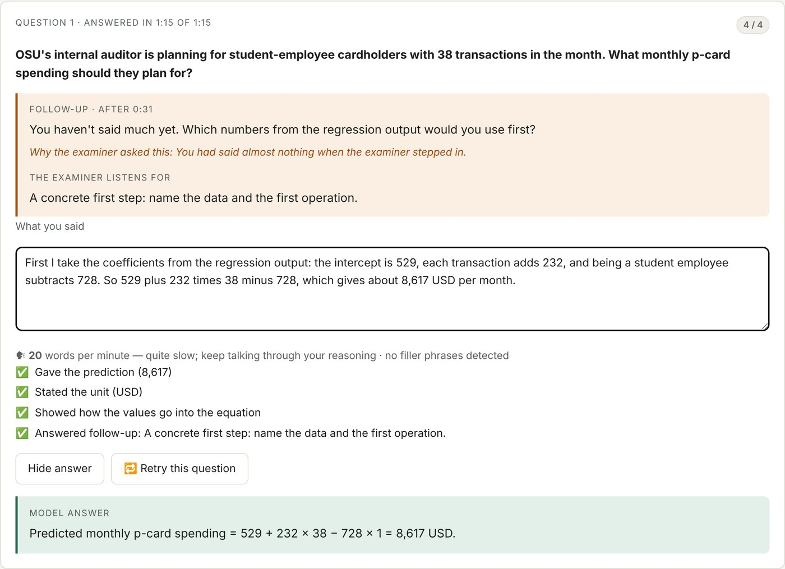

Project 1
Examiner Mode: an oral exam simulator
- Problem
- The course's practice website for the Data Analytics in Accounting exam only listed questions. Students could read them but never practise the real situation: answering out loud, under time pressure, while an examiner asks follow-up questions. At my own oral exam I didn't know what to expect, and I panicked.
- What I built
- An examiner mode that recreates the exam. The site reads each question aloud, the student answers out loud against a countdown, and the examiner interrupts with a follow-up chosen from what the student has said so far. It can quote a wrong number back, ask for a missing unit, or catch a classic mistake such as "significant means important". Students pick a friendly, standard or strict examiner.
- Feedback
- At the end the student sees what they said written down, a checklist of the key points they covered or missed, why each follow-up was asked, the model answer, and notes on how they sounded (pace, filler words).
- Result
- The teacher gave very positive feedback and said he had never seen an idea like this from a student before.


